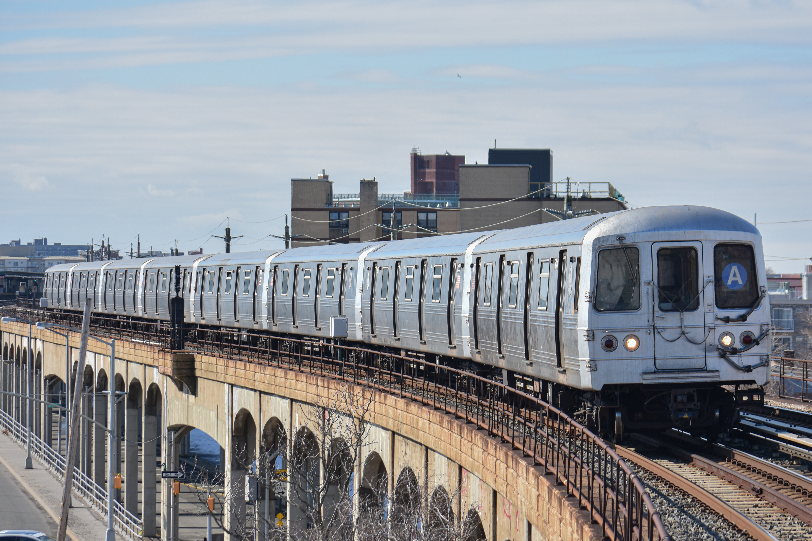

Transit and Transportation
Hourly MTA traffic in Brooklyn tells the story of New Yorkers' commutes and workplaces
We looked at hourly traffic at each train station in Brooklyn over a five-week period in early 2024 to better understand New Yorkers' commutes and travel schedules.
Published on
By Alec Sturm
Every day, over 3 million New Yorkers use the New York City Subway, a century-old transit system and the beating heart of the most populated city in the United States. With over 8 million residents, New York City sees about 35% of its residents use public transit, daily.
In Brooklyn, New York’s most populated borough, over 200,000 riders enter the system at one of 157 stations between the hours of 7 a.m. and 11 a.m., according to my analysis of hourly transit data between February 6th and March 15th, 2024.
Over a full day, the most active hours for the borough in our sample are in the morning, with the most riders entering stations between 8 a.m. and 9 a.m. While the MTA does not publicly track rider movement and transfers within the system, movement throughout the borough can be visualized through riders entering stations throughout the day.
This pattern is reflected in the mapped visualization.
The most frequented stations are in downtown Brooklyn, with Atlantic Avenue-Barclays Center and Jay Street-MetroTech being the two most visited stations on a per-hour average. The stations saw an average of 1,213 and 1,065 riders, respectively, in my data sample. However, these stations also host many different train lines, offering riders more options than the average Brooklyn station. The third most-used station in our sample, Bedford Avenue, offers just the L train, but saw an average of only 50 less riders per hour than Jay Street-MetroTech, well within a hypothetical margin of error when accounting for sampling bias and fare evasion.
Hourly traffic at each Brooklyn train station.
Colors reflect each line.
Created by Alec Sturm using Datawrapper and iMovie.
The difference between the Atlantic Ave. and Bedford Ave. train stations represents the dichotomy of two types of stations — workplace stations and residential ones.
Take, for example, a station such as Church Avenue in northern Kensington. Church Ave. intersects with both the F and G train lines, the former of which runs through downtown Brooklyn, lower Manhattan and Midtown, and the latter serving as the sole transit throughway for northern Brooklyn and Queens. The Church Ave. station may not see as much total traffic as Atlantic Avenue, even at the peak 8 a.m. hour, but its ridership during that time frame increases threefold, nearly twice as much as the massive transit hub.
Church Avenue Station is in a residential neighborhood, explaining its commuters using the train at a greater rate in the morning to commute to work.
Thomas Mundell is a 34-year-old Broadway photographer who lived in Clinton Hill, an affluent Brooklyn neighborhood, between March 2022 and January 2024. He now lives in Harlem.
Mundell used the subway “daily,” he told me. “Multiple times daily.” Mundell’s commute consisted of a 35-minute ride on the C Line from his local station Clinton-Washington to Hell’s Kitchen, where the vast majority of his shoots take place.
Clinton-Washington Station’s traffic peaks at 7 a.m. with six times its hourly average. Mundell, however, used the train in the late afternoon instead.
“Oh god no, I’m not a morning person,” said Mundell. “[The shoots] were typically at 6 or later.” Mundell noted that the blue A-C line wouldn’t fill up until the train left the borough. “It didn't get busy at my spot. The train cars didn't get busy until we got — and I forget what the stop was — but the first stop in Manhattan is where it would really fill up,” he added.
Traffic flows Northwest in the borough of Brooklyn, near the downtown. But commuters are not just moving towards downtown Brooklyn, but also Manhattan. Mundell’s commute represents the second-largest jump of the day, the 5 p.m. hour. The visualization at the top of the story deosn't take into account passengers exiting the subway station, only entering. Thus, a morning commute can be clearly seen as all of the residential stations fill up, but the dots don't fill back up in the evening — since the passngers cannot be seen "going home."
Mundell's story represents the reality of daily transit in New York City and Brooklyn. While not every passenger may enter the car at the same time, most are headed in the same general direction. The beating heart of NYC pumps out another.